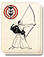

Requires
Enables
- Buildings:

- Arts: 
Effects
- Enables fire arrows
Description
The mind and sight of any archer must be trained, as surely as his muscles: a distant target must be recognised before it can be killed. This advanced training prepares bowmen to use fire arrows, deadly flaming missiles that can set fire to buildings, ships and people.
The bow has a long history in Japan, and before the introduction of the arquebus, it was the primary weapon used by samurai. They were expected to master the use of bow on foot and from horseback. In the latter part of the 15th century, Heki Danjo Masatsugu (1443-1502), a great warrior and teacher of kyudo or "the way of the bow" established an archery school. Most archery training at that time concentrated on mounted combat, but he taught his students how to fire a bow while standing. His revolutionary teachings were formalised and taught to ashigaru foot soldiers. As a result, they became a cheap supporting arm for samurai cavalry archers. However, the ashigaru still lacked the skill of samurai, and fired mass volleys rather than acting as sharpshooters.